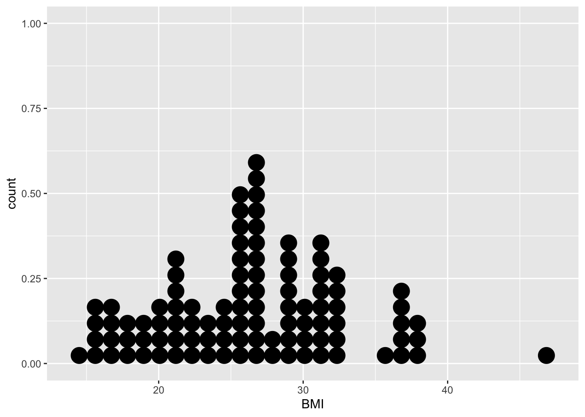
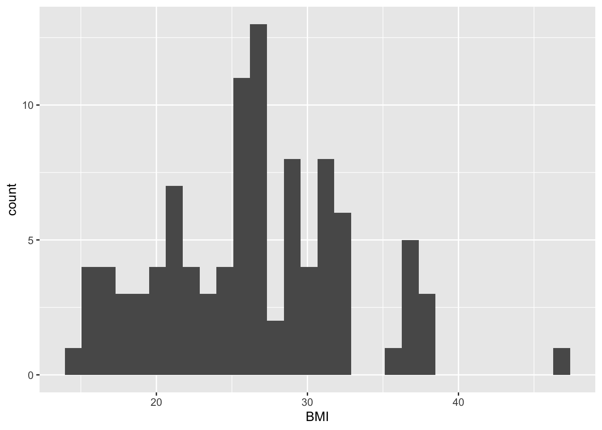
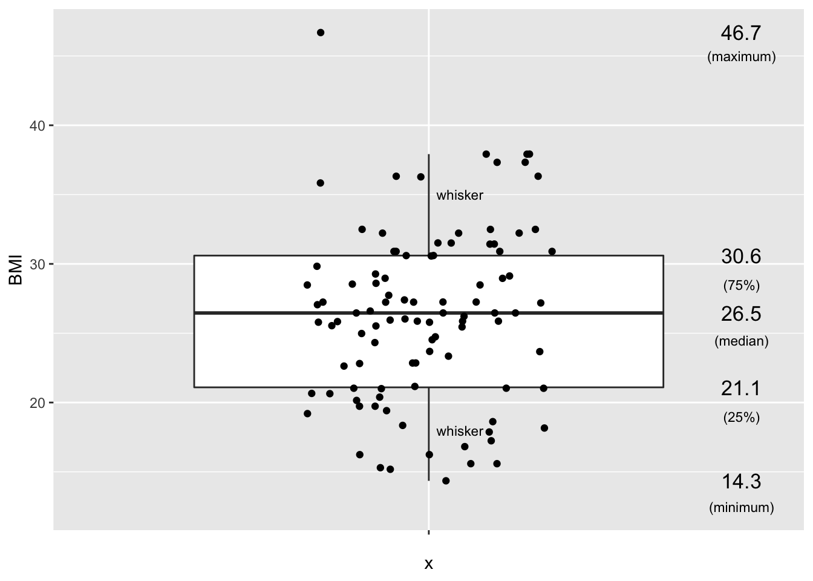
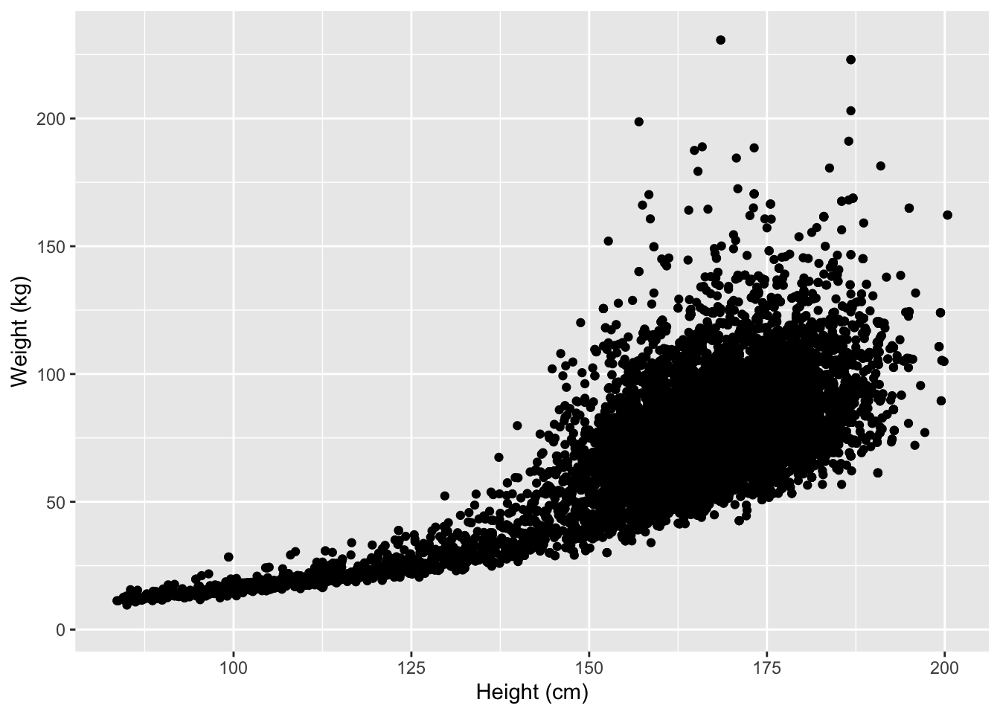
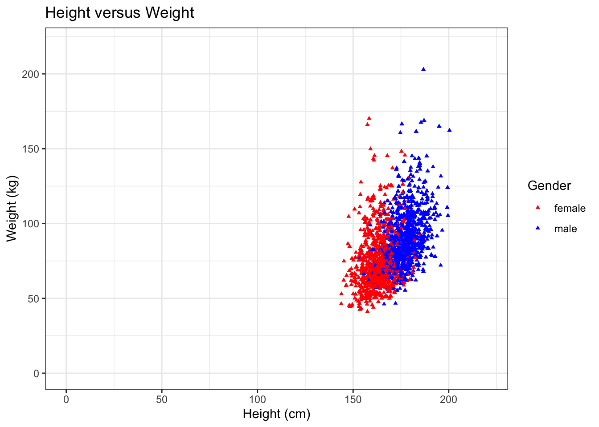
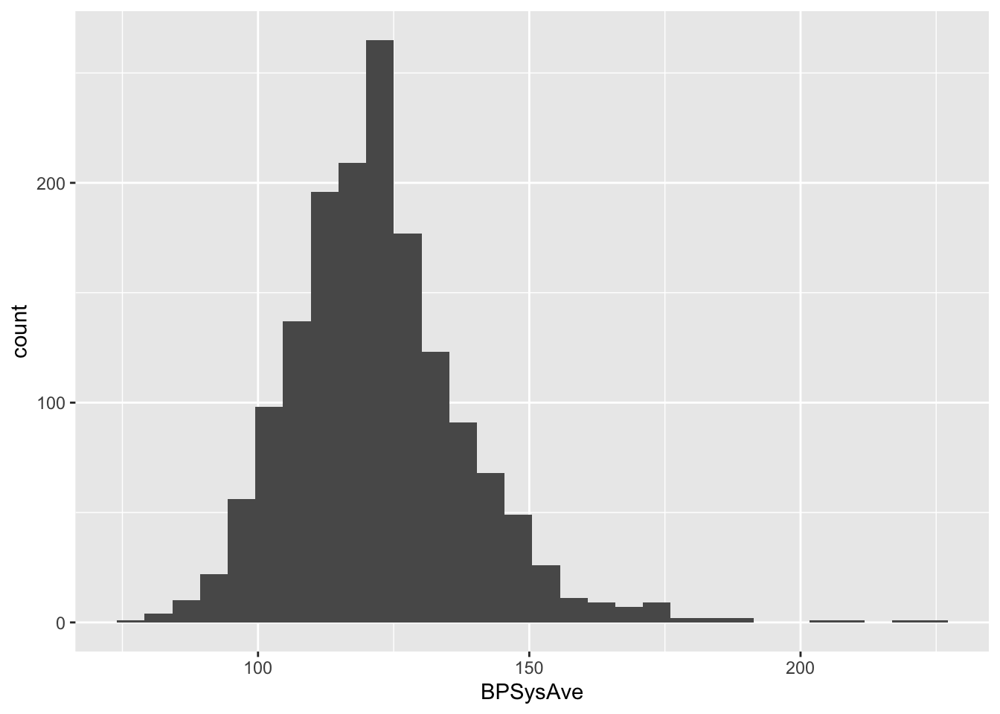
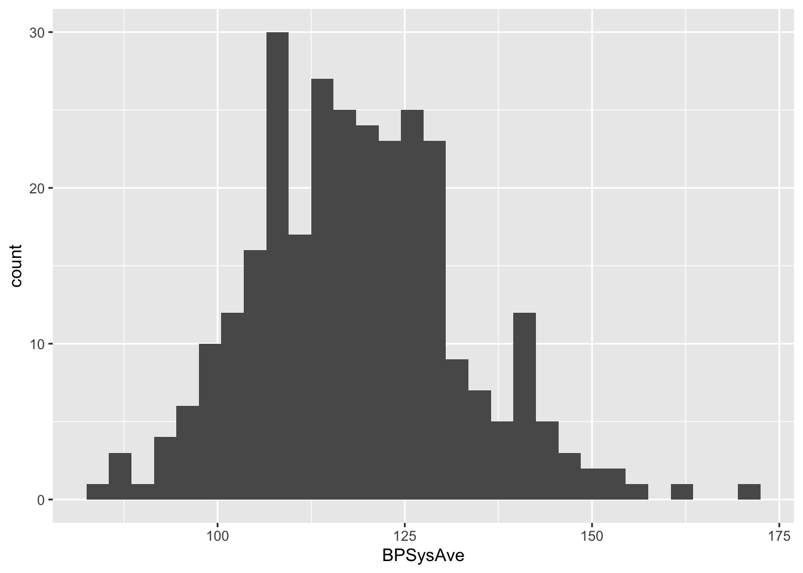

Exercise 4.1: Exploring the NHANES dataset
Lieven Clement and Jeroen Gilis
statOmics, Ghent University (https://statomics.github.io)
In this exercise, we will learn how to import, tidy, wrangle and visualize data.
1 The NHANES dataset
The National Health and Nutrition Examination Survey (NHANES) contains data that has been collected since 1960. For this tutorial, we will make use of the data that were collected between 2009 and 2012, for 10.000 U.S. civilians. The dataset contains a large number of physical, demographic, nutritional and life-style-related parameters.
Before we can actually start working with data, we will need to learn how to import the required datasets into our Rstudio environment.
2 Data Import with the readr R package
Let’s try reading in some data. We will begin by reading in the NHANES.csv dataset.
## Rows: 10000 Columns: 76## ── Column specification ────────────────────────────────────────────────────────
## Delimiter: ","
## chr (31): SurveyYr, Gender, AgeDecade, Race1, Race3, Education, MaritalStatu...
## dbl (45): ID, Age, AgeMonths, HHIncomeMid, Poverty, HomeRooms, Weight, Lengt...##
## ℹ Use `spec()` to retrieve the full column specification for this data.
## ℹ Specify the column types or set `show_col_types = FALSE` to quiet this message.NHANES[c(1,4,5,6,7,8),c("ID",
"Gender",
"Age",
"Race1",
"Weight",
"Height",
"BMI",
"BPSysAve")] # display a select set of variable and subjects2.0.1 Take a glimpse() at your data
The glimpse function allows us to (obviously) take a first, informative glimpse at our data. The function is part of the dplyr, which we will explore in much more detail below!
## Rows: 10,000
## Columns: 10
## $ ID <dbl> 51624, 51624, 51624, 51625, 51630, 51638, 51646, 51647, …
## $ SurveyYr <chr> "2009_10", "2009_10", "2009_10", "2009_10", "2009_10", "…
## $ Gender <chr> "male", "male", "male", "male", "female", "male", "male"…
## $ Age <dbl> 34, 34, 34, 4, 49, 9, 8, 45, 45, 45, 66, 58, 54, 10, 58,…
## $ AgeDecade <chr> "30-39", "30-39", "30-39", "0-9", "40-49", "0-9", "0-9",…
## $ AgeMonths <dbl> 409, 409, 409, 49, 596, 115, 101, 541, 541, 541, 795, 70…
## $ Race1 <chr> "White", "White", "White", "Other", "White", "White", "W…
## $ Race3 <chr> NA, NA, NA, NA, NA, NA, NA, NA, NA, NA, NA, NA, NA, NA, …
## $ Education <chr> "High School", "High School", "High School", NA, "Some C…
## $ MaritalStatus <chr> "Married", "Married", "Married", NA, "LivePartner", NA, …3 Data Tidying
** Important ** If you are not familiar yet with the concepts of tidy data, have a look at the extra1_preliminary_tidyverse.Rmd file!
If we consider our NHANES dataframe, we see it is already in a tidy format, as;
- Each variable forms a column.
- Each observation forms a row.
- Each type of observational unit forms a table.
Each row contains all of the information on a single subject (US civilian) in the study.
In te next tutorial, we will work with a dataset on the effects of a certain drug, captopril, on the systolic and diastolic blood pressure of patients. This will not be a tidy dataset. As such, the details of tidying data with tidyverse will be described there
4 Data wrangling with dplyr
The dplyr package provides us with a large set of functions for handeling our data. We refer to the preliminary_tidyverse.Rmd file for a more detailed description of these functions.
The most important dplyr functions to remember are:
dplyr verbs |
Description |
|---|---|
select() |
select columns |
filter() |
filter rows |
arrange() |
re-order or arrange rows |
mutate() |
create new columns |
summarize() |
summarize values |
group_by() |
allows for group operations in the “split-apply-combine” concept |
In addition, dplyr uses the pipe operator %>% to use the output of one function as an input to the next function. Instead of nesting functions (reading from the inside to the outside), the idea of of piping is to read the functions from left to right.
4.1 Select and filter
Here we will demonstrate the dplyr functionalities with a couple of small examples.
Let’s say we want to investigate how many subjects are
men that
are older than 18 years old,
are taller than 150 cm, and
have weight of less than 80kg
NHANES %>%
select(c("Gender","Age","Weight","Height")) %>% ## select the colums of interest
filter(Gender == "male",
Age > 18,
Height > 150,
Weight < 80) %>% ## filter observations (rows) based on the required values
nrow()## [1] 1286Filtering the dataset based on thee three filtering criteria retain 3.601 subjects. Note that the the select step wasn’t strictly necessary, but since we could answer the question based on only these 4 colums, there is no need to retain the the rest of the data (if this is the only question).
4.2 Arrange
Next question; Within the Race1 category of Hispanics, select men that are not married and display the first five by descending height.
Hint: use the desc() function inside of arrange() to order rows in a descending order. Use the base R function head to display the first five.
NHANES %>%
select(c("Race1", "Gender","MaritalStatus","Height")) %>%
filter(MaritalStatus != "Married", Race1 == "Hispanic", Gender == "male") %>%
arrange(desc(Height)) %>%
head(n=5)We have successfully combined three of the main dplyr functionalities. Let’s try to explore another one!
4.3 Mutate
Assume that we don’t trust the BMI values in our dataset and we decide to calculate them ourselves. BMI is typically calculated by taking a person’s weigth (in kg) and dividing it by the its height (in m) squared. Based on this rule, generate a new column, BMI_self, for the subset of the NHANES dataset that we obtained from the previous question. To create new columns, we will use the mutate() function in dplyr.
NHANES %>%
select(c("Race1", "Gender","MaritalStatus","Height","Weight","BMI")) %>%
filter(MaritalStatus != "Married", Race1 == "Hispanic", Gender == "male") %>%
mutate(BMI_self = Weight/(Height/100)**2)Note that now we need to include the Weight and BMI columns in the select statement, because we need that input for the mutate function. Good news: It turns out that the BMI column in the original dataset was computed correctly after all! But now we are interested in the mean value of the BMI_Self column. This requires a fifth dplyr function: summarise().
4.4 Summarise
Given the filtering of the question above, compute the mean value of the BMI_self column.
NHANES %>%
select(c("Race1", "Gender","MaritalStatus","Height","Weight","BMI")) %>%
filter(MaritalStatus != "Married", Race1 == "Hispanic", Gender == "male") %>%
mutate(BMI_self = Weight/(Height/100)**2) %>%
summarise(avg_BMI_self = mean(BMI_self, na.rm = TRUE))## the addition argument na.rm = TRUE makes sure to remove missing
## values for the purpose of calculating the meanFor this particular subset of the data, we find an average BMI value of 28.59 kg/m**2.
There are many other summary statistics you could consider such sd(), min(), median(), max(), sum(), n() (returns the length of vector), first() (returns first value in vector), last() (returns last value in vector) and n_distinct() (number of distinct values in vector). We will elaborate on these functions later.
Note that choosing the most informative summary statistic is very important! This can be shown with the following example;

In this study, men and woman were asked about their “ideal number of partners desired over 30 years”. While almost all subjects desired a number between 0 and 50, three male subjects selected a number above 100. These three outliers in the data can have a large impact on the data analysis, especially when we work with summary statistics that are sensitive to these outliers.
When we look at the mean, for instance, we see that on average woman desire 2.8 partners, while men desire 64.3 partners on average, suggesting a large discrepancy between male and female desires.
However, if look at a more robust summary statistic such as the median, we see that the result is 1 for both men and woman. It is clear that the mean value was completely distorted by the three outliers in the data.
Another example of a more robust summary statistic is the geometric mean.
4.5 Group
We already combine 5 very important functions. Here, we will add a final one: group_by().
The group_by() verb is and incredibly powerful function in dplyr. It allows us, for example, to calculate summarisy statistics for different groups of observations.
If we take our example from above, let’s say we want to split the data frame by some variable (e.g. MaritalStatus), apply a function (mean) to a column (e.g. BMI_self) of the individual
data frames and then combine the output back into a summary data frame.
NHANES %>%
select(c("Race1", "Gender","MaritalStatus","Height","Weight","BMI")) %>%
filter(MaritalStatus != "Married", Race1 == "Hispanic", Gender == "male") %>%
mutate(BMI_self = Weight/(Height/100)**2) %>%
group_by(MaritalStatus) %>% ## group the subjects by their marital status
summarise(avg_BMI_self = mean(BMI_self, na.rm = TRUE)) ## calculate the mean BMI_self value of each groupWe have successfully combined six of the most important dplyr functionalities!
Now that we have all the required functions for importing, tidying and wrangling data in place, we will learn how to visualize our data with the ggplot2 package.
5 Data Visualization
As you might have have already seen, there are many functions available in base R that can create plots (e.g. plot(), boxplot()). Others include: hist(), qqplot(), etc. These functions are great because they come with a basic installation of R and can be quite powerful when you need a quick visualization of something when you are exploring data.
We are choosing to introduce ggplot2 because, in our opinion, it’s one of the simplest ways for beginners to create relatively complicated plots that are intuitive and aesthetically pleasing.
5.1 Univariate statistics
In univariate statistics, we focus on a single variable of interest. Here, we will show different ways to visualize the BMI variable from the NHANES dataset. Importantly, different types of visualizations will provide us with different types of information!
Here we will visualize the same data using a dotplot, a histogram and a boxplot.
5.1.1 Dotplot
NHANES %>%
head(NHANES, n=100) %>% ## to make the visualization more clear, we take only the first 100 subjects
ggplot(aes(x=BMI)) +
geom_dotplot(method = "histodot") ## Bin width defaults to 1/30 of the range of the data. Pick better value with `binwidth`.## Warning: Removed 1 rows containing non-finite values (stat_bindot).
In the dotplot, the BMI value for each subject (in this case, the first 100 subjects of the NHANES study), is plotted on the x-axis. The y-axis allows us to count how many subjects have a BMI value that falls within a certain counting bin. For instance, in the BMI interval [29.5, 30.[ we observe 4 subjects.
Note, however, that the dotplot does not provide us with information on the mean/median values of the data, which are typically features of high interest.
5.1.2 Histogram
## `stat_bin()` using `bins = 30`. Pick better value with `binwidth`.## Warning: Removed 1 rows containing non-finite values (stat_bin).
The information taht can be obtained from this histogram is similar to that of the dotplot. Here, we can read immediately (i.e. without counting) that the BMI interval [29.5, 30.0[ contains 4 subjects. Again, the histogram does not provide us with information on the mean/median values of the data, but only on its distribution.
5.1.3 Boxplot
set.seed(2) ## to make the horizontal position of the jitter non-random
NHANES %>%
head(NHANES, n=100) %>%
ggplot(aes(x="", y=BMI)) +
geom_boxplot(outlier.shape=NA) +
geom_jitter(width=0.2) +
stat_summary(geom="text", fun.y=quantile,
aes(label=sprintf("%1.1f", ..y..)),
position=position_nudge(x=0.5), size=4.5) +
annotate("text", x = c(1.5,1.5,1.5,1.5,1.5,1.05,1.05), y = c(12.5,19,24.5,28.5,45,18,35), label = c("(minimum)","(25%)","(median)","(75%)","(maximum)","whisker","whisker"),size=3)## Warning: `fun.y` is deprecated. Use `fun` instead.## Warning: Removed 1 rows containing non-finite values (stat_boxplot).## Warning: Removed 1 rows containing non-finite values (stat_summary).## Warning: Removed 1 rows containing missing values (geom_point).
Arguably, the boxplot is the most informative default visualization strategy. First, it provides us with similar insights to the shape of the distribution as the histogram. Second, It clearly displays several useful summary statistics such as the median, the interquartile range, whiskers and outliers. Third, with the geom_jitter functionality we can also project each individual value of the dataset on the plot.
The only disadvantage of the boxplot as compared to the dotplat or histogram is that we cannot see (from the figure) how many subjects have a BMI value within a certain interval. However, this feature usually is not of primary interest.
5.2 Bivariate statistics
In bivariate statistics, the goal is to study two variables, including the relationship between both variables.
In terms of visualizations, the scatterplot is the baseline method for displaying two variables.
5.2.1 Create scatter plots using geom_point()
For the NHANES dataset, we can for instance look at the relationship between a person’s height and weigth values.
p <- NHANES %>%
ggplot(aes(x = Height, y = Weight))
p + geom_point() +
xlab("Height (cm)") +
ylab("Weight (kg)")## Warning: Removed 366 rows containing missing values (geom_point).
We used the xlab() and ylab() functions in ggplot2 to specify the x-axis and y-axis labels. Note that NA values were automatically remove by the geom_point function.
ggplot2 also has a very broad panel of aesthetic features for improving your plot. One very basic feature is that we can give colors to the ggplot object. For instance, we can give different colors to the dots in the previous scatterplot based on a subject’s gender.
NHANES %>%
ggplot(aes(x = Height, y = Weight, color = Gender)) +
geom_point() +
xlab("Height (cm)") +
ylab("Weight (kg)")## Warning: Removed 366 rows containing missing values (geom_point).
6 Combining dplyr and ggplot2
Note that the previous functions from the dplyr package can be easily combined with ggplot through the concept of pipes %>%.
For instance, we could make the same scatterplot as above, but only for white, married adults.
In addition, we here also show some convenient ggplot features; 1. Setting the colors manually 2. Set to have a white background 3. Set a (main) title for the plot 4. Pick a different shape for the dots in the scatterplot 5. Manually set the limits of the x- and y-axes
Note that this a only the tip of the iceberg of the the ggplot functionalities!
NHANES %>%
filter(Age >= 18, Race1 == "White", MaritalStatus == "Married") %>% ## select the required data
ggplot(aes(x = Height, y = Weight, color = Gender)) +
geom_point(shape=17, size = 1) + ## set to a different shape (triangle) and size
ggtitle("Height versus Weight") + ## for the main title
xlab("Height (cm)") +
ylab("Weight (kg)") +
xlim(0,220) + ## set limit of x-axis
ylim(0,220) + ## set limit of y-axis
scale_color_manual(values = c("red","blue")) + ## manually set colors
theme_bw() ## set white background## Warning: Removed 22 rows containing missing values (geom_point).
Next to scatterplots, we have a large number of other types of plots at our disposal. Importantly, some plots will be more informative than others, depending on the research question. Therefore, choosing the plot that is most informative is crucial. We show this with a more elaborate example later (captopril exercise).
7 Final example
7.1 Goal
Set up a reference interval for the systolic blood pressure in the NHANES dataset.
7.2 Background
The captopril dataset, which we will explore and analyse later, holds information on 15 patients that have increased blood pressure values.
Before we may conduct such an experiment, we first need to know which values should be considered increased and which ones should be considered normal. To find an interval for values that are normal, we can set up a reference interval. To set up this interval, we will use the NHANES dataset. The BPSysAve column holds data on the systolic blood pressure. To select healthy subjects, we will need to subset the data.
7.3 Analysis
First, we will plot the data for all subjects for which we have all the required data and that are between 40 and 65 years old.
## histogram of BPSysAve for subjects wit age between 40 and 65 years old
NHANES %>%
filter(!is.na(Race1), !is.na(Smoke100n), !is.na(BMI_WHO), !is.na(Age), !is.na(HardDrugs), !is.na(HealthGen), !is.na(Gender), !is.na(AlcoholYear), !is.na(BPSysAve), !is.na(SleepTrouble)) %>% ## retains 4660 subjects with the required data
filter(between(Age,40,65)) %>% ## filter the subjects on age, retains 2522 subjects
distinct(ID,.keep_all=TRUE) %>% ## removes duplicated IDs, retains 1467 subjects
ggplot(aes(x=BPSysAve)) +
geom_histogram()## `stat_bin()` using `bins = 30`. Pick better value with `binwidth`.
An important requirement of calculating reference intervals is that the data is normally distributed. this is clearly not the case; the data has a long right tail, which is quite common in biological data (in this easier to have extreme values on the right-hand side than on the left-hand size, which is additionally bounded by zero for most biological variables).
By selecting only healthy subjects, we expect the data to be distributed more normally. We define healthy as being a non-smoker, without a history of diabetes, hard drugs or sleeping trouble, with a general health that is not considered poor and that has a BMI between 18.5 and 29.9.
## histogram of BPSysAve for HEALTHY subjects wit age between 40 and 65 years old
NHANES %>%
filter(!is.na(Race1), !is.na(Smoke100n), !is.na(BMI_WHO), !is.na(Age), !is.na(HardDrugs), !is.na(HealthGen), !is.na(Gender), !is.na(AlcoholYear), !is.na(BPSysAve), !is.na(SleepTrouble)) %>% ## retains 4660 subjects with the required data
filter(between(Age,40,65)) %>% ## filter the subjects on age, retains 2522 subjects
distinct(ID,.keep_all=TRUE) %>% ## removes duplicated IDs, retains 1467 subjects
filter(Smoke100n == "Non-Smoker", Diabetes == "No", HardDrugs == "No", HealthGen != "Poor", SleepTrouble == "No", BMI_WHO%in%c("18.5_to_24.9","25.0_to_29.9")) %>% ## filter to have only healthy subjects, based on multiple health criteria. Retains 275 subjects.
ggplot(aes(x=BPSysAve)) +
geom_histogram()## `stat_bin()` using `bins = 30`. Pick better value with `binwidth`.
Now the data seems to be approximately normal by eye (we will later show how to assess data normality more formally). From this subset, we may calculate the reference interval.
## to get the 95% reference interval for the healthy group;
summary_NHANES <- NHANES %>%
filter(!is.na(Race1), !is.na(Smoke100n), !is.na(BMI_WHO), !is.na(Age), !is.na(HardDrugs), !is.na(HealthGen), !is.na(Gender), !is.na(AlcoholYear), !is.na(BPSys1), !is.na(BPSys2), !is.na(BPSys3), !is.na(SleepTrouble)) %>% ## retains 4660 subjects with the required data
filter(between(Age,40,65)) %>% ## filter the subjects on age, retains 2522 subjects
distinct(ID,.keep_all=TRUE) %>% ## removes duplicated IDs, retains 1467 subjects
filter(Smoke100n == "Non-Smoker", Diabetes == "No", HardDrugs == "No", HealthGen != "Poor", SleepTrouble == "No", BMI_WHO%in%c("18.5_to_24.9","25.0_to_29.9")) %>% ## filter to have only healthy subjects, based on multiple health criteria. Retains 275 subjects.
Rmisc::summarySE(measurevar="BPSysAve") # calculate the summary statistics
paste("Mean value:", summary_NHANES$BPSysAve)## [1] "Mean value: 119.018181818182"## [1] "Standard deviation: 13.9763759348907"paste0("Reference interval: [", summary_NHANES$BPSysAve - 2*summary_NHANES$sd, ";", summary_NHANES$BPSysAve + 2*summary_NHANES$sd, "]")## [1] "Reference interval: [91.0654299484005;146.970933687963]"The systolic blood pressure for healthy subjects is distributed symmetrically, and in a later tutorial we will show that these values approximately follow a normal distribution. We have calculated the mean and standard deviation of blood pressure values in this healthy subset, which allows us to set up the (95%) reference interval, for what we can consider to be normal blood pressure values. Any of the later patients who’s values do not fall within this interval, we can consider abnormal.
The mean blood pressure value of the healthy subset is 119 mmHg, with a standard deviation of 14 mmHg. When we replace the population average and population standard deviation with these estimates, we obtain a 95% reference interval of [91;147] mmHg.
Note that in the literature a value 140 mmHg for the systolic blood pressure is typically considered to be the upper limit of normality.